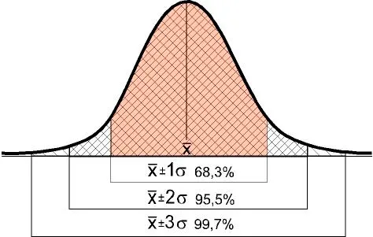
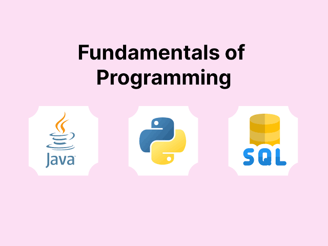

Estadística
- estadística descriptiva
- distribución de probabilidades

Hola! te invito a revisar mi perfil de Linkedln, mi área de interés esta relacionado con la tecnología y como esta nos ayuda a la toma de decisiones en distintos entornos como manufactura, retail, comercio y logística.


¿Qué espero al terminar el bootcamp? : Poder poder lanzar a producción aplicaciones listas para integrar con modelos de machine learning